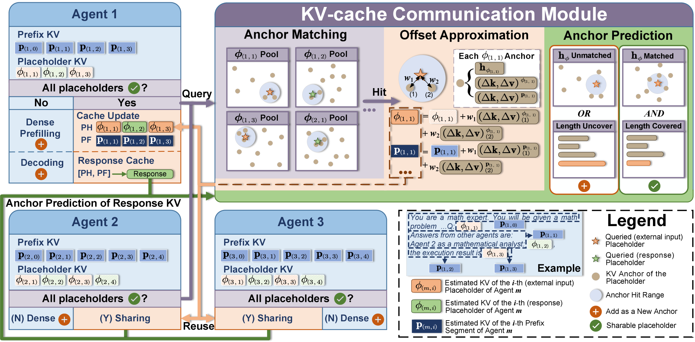

Why it matters왜 중요한가
Multi-agent LLMs reprocess overlapping context for every agent, and prefill cost scales quadratically with the number of agents.
멀티에이전트 LLM은 겹치는 컨텍스트를 에이전트마다 다시 처리하고, prefill 비용은 에이전트 수에 따라 제곱으로 늘어난다.
KV-cache reuse is the standard fix for redundant prefill — but it assumes shared text sits behind identical prefixes. In multi-agent systems that assumption breaks: the same retrieved document or peer message appears after each agent's own system prompt and role, so RoPE positions shift and contextual influence changes, and the cached keys/values diverge. Prior methods either recompute from scratch (no speedup) or blend caches heuristically (CacheBlend) — which the paper shows collapses on math and code (HumanEval Pass@1 falls to ~33% at five agents). KVCOMM is the first method to make cross-context KV reuse both fast and accuracy-preserving, with no training and no model changes.
KV-cache 재사용은 중복 prefill을 없애는 표준 해법이지만, 공유 텍스트가 동일한 prefix 뒤에 온다고 가정한다. 멀티에이전트에선 이 가정이 깨진다 — 같은 검색 문서나 동료 메시지라도 각 에이전트의 시스템 프롬프트·역할 뒤에 붙어 RoPE 위치가 달라지고 문맥 영향이 바뀌어, 캐시된 key/value가 어긋난다. 기존 기법은 처음부터 다시 계산하거나(가속 없음) 휴리스틱으로 캐시를 섞는데(CacheBlend), 논문은 후자가 수학·코딩에서 무너짐을 보인다(5에이전트에서 HumanEval Pass@1이 ~33%로 급락). KVCOMM은 학습도 모델 수정도 없이 cross-context KV 재사용을 빠르면서 정확도까지 지킨 첫 방법이다.

By the numbers핵심 숫자
Accuracy holds where prior reuse collapses (5-agent)기존 재사용이 무너지는 5-에이전트에서도 정확도 유지
| Benchmark (5 agents)벤치마크 (5에이전트) | Original (no reuse)Original (재사용 없음) | CacheBlend | KVCOMM |
|---|---|---|---|
| MMLU — Acc % | 69.9 | 67.3 | 69.9 |
| GSM8K — Acc % | 81.7 | 57.1 | 79.6 |
| HumanEval — Pass@1 % | 85.1 | 32.9 | 83.2 |
| KV reuse rate %KV 재사용률 % | 0 | 80 | 67.6–77.8 |
The core ideas핵심 아이디어
De-rotate, then re-rotate RoPERoPE 역회전 후 재회전
Under RoPE a token's raw key changes drastically when its position shifts. KVCOMM de-rotates each stored key by R−Δ before comparing, isolating pure contextual deviation from the positional change, then re-rotates it to the new slot. This separation is what makes a cached key meaningful in a new position.
RoPE에서는 토큰 위치가 바뀌면 raw key가 크게 달라진다. KVCOMM은 비교 전에 저장된 key를 R−Δ로 역회전해 순수한 문맥 편차만 분리한 뒤, 새 자리로 다시 재회전한다. 이 분리 덕분에 캐시된 key가 새 위치에서도 의미를 갖는다.
KV reuse as approximate translation근사 번역으로서의 KV 재사용
For each shared placeholder KVCOMM keeps an anchor pool storing a base KV-cache plus measured offsets (how the cache deviates under specific prefixes). A new occurrence's KV is rebuilt as base + a softmax-weighted sum of nearby anchors' offsets, weighted by embedding similarity. Theory (Props 1–2) shows deviations of similar tokens stay close, justifying the interpolation.
각 공유 placeholder마다 KVCOMM은 base KV-cache와 측정된 offset(특정 prefix에서 캐시가 얼마나 어긋나는지)을 담은 anchor pool을 유지한다. 새 등장 KV는 base + 인접 anchor offset들의 softmax 가중합으로 재구성하며, 가중치는 임베딩 유사도로 정한다. 이론(명제 1–2)은 비슷한 토큰의 편차가 가깝게 유지됨을 보여 보간을 정당화한다.
Per-agent shareability check + fallback에이전트별 공유성 판정 + 폴백
Before reusing, each agent runs a shareability test (length compatibility + embedding-entropy proximity to existing anchors). If every placeholder passes, it skips prefill entirely and decodes; if not, it does a normal dense prefill and contributes the new cache as a fresh anchor. The pool is pruned by least-frequent access, so it adapts online without unbounded growth.
재사용 전에 각 에이전트는 공유성 테스트(길이 호환성 + 기존 anchor와의 임베딩 엔트로피 근접도)를 수행한다. 모든 placeholder가 통과하면 prefill을 통째로 건너뛰고 디코딩하고, 아니면 일반 dense prefill 후 새 캐시를 새 anchor로 기여한다. pool은 최저 빈도 접근 기준으로 가지치기되어 무한정 커지지 않고 온라인으로 적응한다.
How it works어떻게 작동하나
- Precompute base cachesbase 캐시 사전계산 — each agent caches KV for the fixed segments of its prompt template ahead of any request. — 각 에이전트가 요청 전에 프롬프트 템플릿의 고정 구간 KV를 미리 캐시한다.
- Match anchorsanchor 매칭 — when a request arrives, look up anchors for each shared placeholder (user input, retrieved doc, peer output) via de-rotated key similarity. — 요청이 오면 공유 placeholder(사용자 입력·검색 문서·동료 출력)마다 역회전된 key 유사도로 anchor를 조회한다.
- Approximate offsetsoffset 근사 — rebuild each placeholder's KV (and the prefix right after it) as base + weighted offsets, then re-rotate keys to their new positions. — 각 placeholder의 KV(및 바로 뒤 prefix)를 base + 가중 offset으로 재구성하고 key를 새 위치로 다시 회전한다.
- Reuse or fall back재사용 또는 폴백 — if all placeholders are shareable, concatenate the reconstructed caches and decode directly (no prefill); otherwise dense-prefill and register a new anchor. — 모든 placeholder가 공유 가능하면 재구성 캐시를 이어붙여 곧장 디코딩(prefill 없음), 아니면 dense prefill 후 새 anchor 등록.
- Update the poolpool 갱신 — store newly produced agent responses as shareable caches or new anchors, pruning by frequency so coverage grows over the workload. — 새로 생성된 에이전트 응답을 공유 캐시나 새 anchor로 저장하고 빈도 기준으로 가지치기해 워크로드가 진행될수록 커버리지를 키운다.
What to take away그래서, 가져갈 것
Prefill — not decode — is the hidden tax in multi-agent LLMs, and it grows quadratically with team size. KVCOMM removes most of it (up to 7.8× faster TTFT) with zero training, making real-time agent collaboration practical.
멀티에이전트 LLM의 숨은 비용은 decode가 아니라 prefill이며, 팀 규모에 따라 제곱으로 늘어난다. KVCOMM은 학습 없이 그 대부분을 제거해(TTFT 최대 7.8× 가속) 실시간 에이전트 협업을 실용화한다.
The key insight is naming and solving the offset-variance problem — same text, different prefix → different KV — by treating reuse as approximate translation: de-rotate position, interpolate content offsets.
핵심 통찰은 offset-variance 문제(같은 텍스트라도 prefix가 다르면 KV가 달라짐)를 명명하고, 재사용을 근사 번역(위치는 역회전, 내용 offset은 보간)으로 풀어낸 데 있다.
Training-free and drop-in matters. Where the prior heuristic (CacheBlend) collapses on reasoning and coding, KVCOMM holds accuracy at a comparable reuse rate — a reminder that "reuse rate" alone is a misleading efficiency metric.
학습 불필요·drop-in이 중요하다. 기존 휴리스틱(CacheBlend)이 추론·코딩에서 무너지는 지점에서 KVCOMM은 비슷한 재사용률로 정확도를 지킨다 — '재사용률'만으로는 효율을 판단할 수 없음을 보여준다.